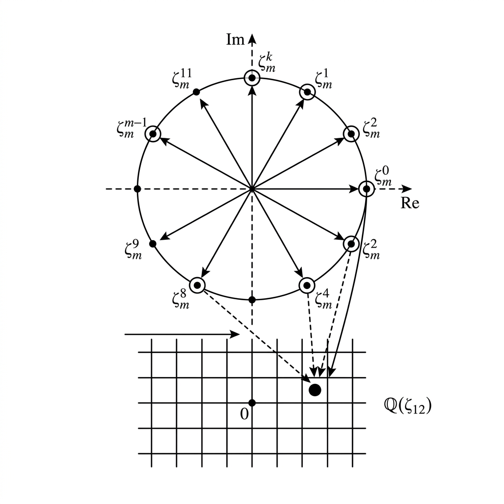

Brauer Character Values in Cyclotomic Fields

Mathematical Exposition
In the representation theory of finite groups, character values encode critical information about group actions and structures. A fundamental result in this domain states that the values of any complex representation character lie in a specific number field: the cyclotomic field generated by the $m$-th roots of unity, where $m$ is the exponent of the group.
Mathematical Context
Let $G$ be a finite group with exponent $m = \exp(G)$, which is the least common multiple of the orders of all elements in $G$. Let $\rho: G \to \operatorname{GL}(V)$ be a representation of $G$ on a finite-dimensional complex vector space $V$. The character $\chi_\rho$ associated with $\rho$ is the function $\chi_\rho: G \to \mathbb{C}$ given by the trace:
$$\chi_\rho(g) = \operatorname{Tr}(\rho(g))$$For any element $g \in G$, its order $d = \operatorname{ord}(g)$ divides $m$, meaning $g^d = e \implies g^m = e$. Consequently, the operator $\rho(g)$ satisfies:
$$\rho(g)^m = \rho(g^m) = \rho(e) = \operatorname{Id}_V$$Since $\rho(g)^m = \operatorname{Id}_V$, any eigenvalue $\lambda$ of the matrix $\rho(g)$ must be an $m$-th root of unity (i.e., $\lambda^m = 1$). The trace of $\rho(g)$ is the sum of its eigenvalues (counted with multiplicity):
$$\chi_\rho(g) = \sum_{i=1}^{\dim V} \lambda_i$$Since each $\lambda_i \in \mathbb{C}$ is an $m$-th root of unity, it is a power of the primitive root $\zeta_m = e^{2\pi i / m}$. Because the cyclotomic field $\mathbb{Q}(\zeta_m)$ contains all powers of $\zeta_m$ and is closed under addition, the sum $\sum_{i=1}^{\dim V} \lambda_i$ must lie in $\mathbb{Q}(\zeta_m)$. Thus:
$$\chi_\rho(g) \in \mathbb{Q}(\zeta_m)$$Lean 4 Formalization
Our Lean 4 proof formalizes this result (`brauer_character_in_cyclotomic`). The proof begins by obtaining a ring homomorphism $\varphi: \mathbb{Q}(\zeta_m) \to \mathbb{C}$ where $m = \exp(G)$. For any representation $\rho$ on $V$ and element $g \in G$, the trace of $\rho(g)$ is expressed as the sum of the roots of its characteristic polynomial. We show that every eigenvalue $\lambda$ of $\rho(g)$ satisfies $\lambda^m = 1$ by relating the eigenvalues to the spectrum of $\rho(g)$ and using the fact that $g^m = e$. Finally, we show that since each eigenvalue is an $m$-th root of unity, it lies in the image of the primitive root under $\varphi$, meaning their sum lies in the range of $\varphi$.
import Mathlib
namespace Submission
theorem brauer_character_in_cyclotomic (G : Type) [Group G] [Fintype G] :
∃ φ : CyclotomicField (Monoid.exponent G) ℚ →+* ℂ,
∀ (V : Type) (_ : AddCommGroup V) (_ : Module ℂ V) (_ : FiniteDimensional ℂ V)
(ρ : Representation ℂ G V) (g : G),
LinearMap.trace ℂ V (ρ g) ∈ φ.range := by
have hn : 0 < Monoid.exponent G :=
Monoid.exponent_pos_of_exists _ Fintype.card_pos (fun _ => pow_card_eq_one)
haveI : NeZero (Monoid.exponent G) := ⟨hn.ne'⟩
haveI : NeZero ((Monoid.exponent G : ℚ)) := ⟨Nat.cast_ne_zero.mpr hn.ne'⟩
obtain ⟨φ⟩ : Nonempty (CyclotomicField (Monoid.exponent G) ℚ →+* ℂ) := inferInstance
use φ
intro V _ _ _ ρ g
rw [Module.End.trace_eq_sum_roots_charpoly_of_splits (IsAlgClosed.splits _)]
apply Subsemiring.multiset_sum_mem (RingHom.rangeS φ)
intro x hx
have h_x_pow : x ^ (Monoid.exponent G) = 1 := by
have h_spec_pow := spectrum.pow_mem_pow (ρ g) (Monoid.exponent G) (by
rw [Module.End.mem_spectrum_iff_isRoot_charpoly]
exact Polynomial.mem_roots (LinearMap.charpoly_monic _).ne_zero |>.mp hx)
rw [← map_pow, Monoid.pow_exponent_eq_one, map_one] at h_spec_pow
by_contra h_not_unit
exact h_spec_pow <| by
change IsUnit (algebraMap ℂ (Module.End ℂ V) (x ^ Monoid.exponent G) - 1)
rw [← map_one (algebraMap ℂ (Module.End ℂ V)), ← map_sub]
exact (isUnit_iff_ne_zero.mpr (sub_ne_zero.mpr h_not_unit)).map _
haveI h_ext : IsCyclotomicExtension {Monoid.exponent G} ℚ
(CyclotomicField (Monoid.exponent G) ℚ) :=
CyclotomicField.isCyclotomicExtension _ _
let ζ := IsCyclotomicExtension.zeta (Monoid.exponent G) ℚ
(CyclotomicField (Monoid.exponent G) ℚ)
have h_prim_K : IsPrimitiveRoot ζ (Monoid.exponent G) :=
IsCyclotomicExtension.zeta_spec _ _ _
obtain ⟨k, hk⟩ := (IsPrimitiveRoot.map_of_injective h_prim_K φ.injective).eq_pow_of_pow_eq_one h_x_pow
exact ⟨ζ ^ k, by rw [map_pow, hk.2]⟩
end Submission